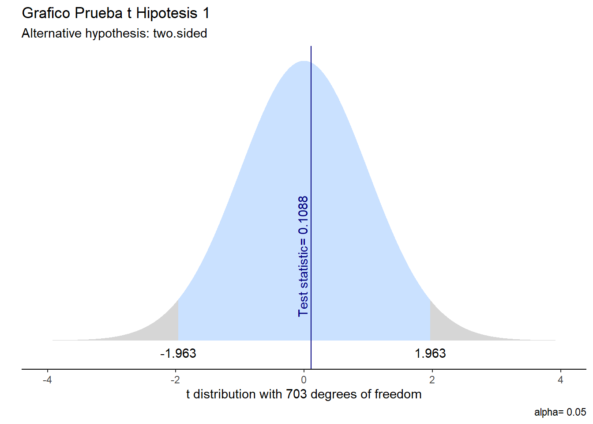
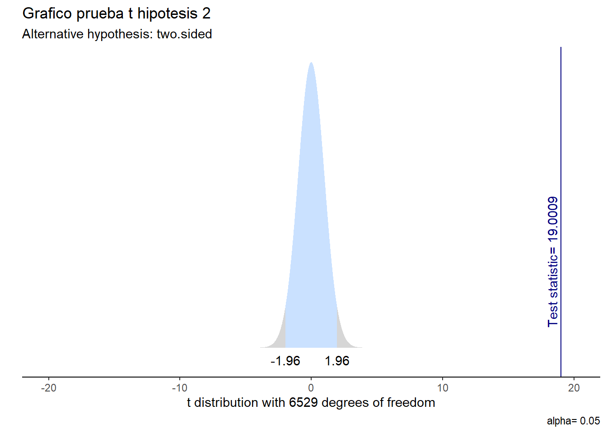

Ruralidad, Urbanidad y Centralismo: Desigualdades del sistema educativo en Chile según el SIMCE 2022
Estadística Correlacional 2024, Carrera de Sociología - Universidad de Chile
Resumen
Varios antecedentes a lo largo de los años evidencian una diferencia en la educación chilena, mayormente ligada a temas territoriales. Esto cobra más relevancia al considerar el centralismo en Chile, siendo la educación un aspecto interesante de analizar. Por ello, surge la pregunta: ¿Cómo se manifiestan las desigualdades educacionales en Chile en los resultados del SIMCE 2022, en cuanto a diferencias territoriales, rurales-urbanas y centralismo? Este informe analiza las desigualdades educativas en el sistema chileno, enfocándose en territorialidad y centralismo, a través de los resultados del SIMCE 2022 aplicado a estudiantes de 4° básico. Se plantean tres hipótesis principales: la existencia de diferencias entre escuelas rurales del norte y sur, que los puntajes en establecimientos rurales son inferiores a los urbanos y que la Región Metropolitana lidera los puntajes nacionales. Se utilizó una metodología cuantitativa, generando una base con 7210 establecimientos, basada en datos SIMCE. Las variables principales incluyen región, diferenciación rural-urbana y puntajes promedio en Lectura y Matemáticas. Los resultados muestran que no existen diferencias significativas por región, pero sí entre ruralidad y urbanidad, siendo estos últimos de mayor desempeño. Además, se evidencia el centralismo chileno en los resultados. El informe demuestra que la centralización y las diferencias territoriales afectan el desempeño en el SIMCE 2022, destacando la Región Metropolitana como líder en puntajes nacionales.
Chile se ha visto interpelado a lo largo de los años por sus elevados niveles de desigualdad, en especial desde la privatización de la educación afectando profundamente a las percepciones y confianza de los estudiantes al rendir la evaluación estandarizada (Schleicher, s/f). Además, se evidencia cómo la Región Metropolitana domina los puntajes nacionales de la Prueba de Acceso a la Educación Superior (tanto en su formato PSU como PDT) mostrando diferencias entre los establecimientos educacionales de Santiago y el resto del país. Por una parte, puede ser debido a la densidad, pero por otra, hace referencia a las consecuencias del centralismo y al estatus de los colegios en la ciudad de Santiago. No es hasta el top.14 que aparece un colegio de otra región en el ranking de los 100 colegios con mejores puntajes del país, y con otra aparición en el top.25 (Radio Bío Bío, 2024). Ha surgido una desafección de las regiones, representada en diversos movimientos estudiantiles. En cuanto a esto, Santiago es epicentro no sólo del poder ejecutivo, sino de las finanzas a nivel país, y asimismo, podríamos argumentar, que también es el punto más alto de la educación (Sabatini, 2020). Es así como surge la pregunta respecto a la situación en regiones y, sobre todo, en ruralidades a lo largo del país.
Se entenderá por ruralidad aquellas comunas en que más de un 50% de la población vive en distritos censales de densidad menor a 150 hab./km² (ODEPA, 2023). Por lo tanto, se entenderá urbanidad como un conjunto de viviendas concentradas con más de 2.000 habitantes, o entre 1.001 y 2.000 habitantes, con el 50% o más de su población económicamente activa dedicadas a actividades secundarias y/o terciarias (INE, 2018). Asimismo, se definieron las regiones a utilizar en la investigación, en base a la información de la Agencia Nacional de Investigación y Desarrollo (s.f.), como Macrozona Norte; Arica y Parinacota, Tarapacá, Antofagasta y Atacama y cómo Macrozona Sur; La Araucanía, Los Ríos y Los Lagos.
En consecuencia, se formula un objetivo de investigación central: analizar las desigualdades educacionales a nivel nacional en base a los resultados SIMCE 2022. De esto, nacen tres hipótesis.
La primera indica que existe una diferencia de puntajes SIMCE entre establecimientos rurales del norte de Chile y establecimientos rurales del sur de Chile. Como hipótesis nula se plantea que no existe diferencia de puntajes entre los establecimientos rurales pertenecientes al norte de Chile y establecimientos rurales del sur de Chile.
Asimismo, la segunda hipótesis hace referencia a que los puntajes en establecimientos urbanos son más altos que los puntajes en establecimientos rurales. Como hipótesis nula se plantea que los puntajes de establecimientos urbanos son menores o iguales a los puntajes en establecimientos rurales.
Finalmente, la tercera hipótesis plantea que existe asociación entre pertenecer a la Región Metropolitana y estar sobre el promedio nacional en la prueba SIMCE. Como hipótesis nula se plantea que no existe asociación entre pertenecer a la RM y estar sobre el promedio nacional en la prueba SIMCE
0.1 Variables y analisis descriptivo
Dentro de las variables a utilizar en la investigación, la primera es “rural_urbano”, la cual nos indica qué establecimientos son rurales y urbanos, esta variable es de tipo nominal dicotómica y los valores correspondientes son “1 = urbano” y “2 = rural”. Sin embargo, estos fueron recodificados para que en la tabla se vea el nombre correspondiente a cada tipo, en vez del valor numérico. En la tabla 2 se puede ver la cantidad de casos correspondientes a cada tipo.
Mediante esta tabla de frecuencias vemos que hay una mayoría, cercano al doble, de establecimientos educacionales son considerados de zonas urbanas.
| Pertenece a zona rural o urbana | n | Proporción |
|---|---|---|
| 1 | 4528 | 62.8 |
| 2 | 2682 | 37.2 |
| a Fuente: Elaboración propia en base a resultados Simce 2022. |
Otra de las variables a utilizar es “región”, que como el nombre indica, muestra a qué región corresponde cada establecimiento en la base de datos. Esta es de tipo nominal y usa nombres directamente en vez de números. La tabla 1 nos muestra cuántos casos tiene cada región correspondiente.
- Análisis de la tabla de descriptivos: La región con más establecimientos educacionales que rindieron el SIMCE 2022 es la Región Metropolitana con 1760, seguido de la región de La Araucanía con 799. Asimismo, las dos regiones con menos establecimientos son la región de Aysén y Magallanes y Antártica Chilena, con 59 y 57 respectivamente.
| Region | n | Proporción |
|---|---|---|
| DE ANTOFAGASTA | 136 | 1.89 |
| DE ARICA Y PARINACOTA | 79 | 1.10 |
| DE ATACAMA | 108 | 1.50 |
| DE AYSÉN DEL GENERAL CARL | 59 | 0.82 |
| DE COQUIMBO | 446 | 6.19 |
| DE LA ARAUCANÍA | 799 | 11.08 |
| DE LOS LAGOS | 640 | 8.88 |
| DE LOS RÍOS | 312 | 4.33 |
| DE MAGALLANES Y DE LA ANT | 57 | 0.79 |
| DE TARAPACÁ | 109 | 1.51 |
| DE VALPARAÍSO | 750 | 10.40 |
| DE ÑUBLE | 290 | 4.02 |
| DEL BIOBÍO | 661 | 9.17 |
| DEL LIBERTADOR BERNARDO O | 440 | 6.10 |
| DEL MAULE | 564 | 7.82 |
| METROPOLITANA DE SANTIAGO | 1760 | 24.41 |
| a Fuente: Elaboración propia en base a resultados Simce 2022. |
Asimismo, posteriormente fue necesario generar la variable “zona”, la cual agrupa las diferentes regiones de la variable “región” en 4 zonas; “Zona norte” (Arica y Parinacota, Tarapacá, Antofagasta, Atacama), “Zona sur” (La Araucanía, Los Ríos, Los Lagos), “Zona metropolitana” (Metropolitana de Santiago) y “Otra Zona” (en donde se incluyen otras regiones que no corresponden a las anteriores). Esta variable fue creada para poder comprender de mejor manera las diferencias entre las zonas norte y sur, al calcular las partes rurales de esta variable en la hipótesis 1. De esta forma, en la tabla 5 se puede apreciar la cantidad de casos por zona.
| Zona | n | Proporción |
|---|---|---|
| Otra Zona | 3579 | 49.64 |
| Zona Metropolitana | 1760 | 24.41 |
| Zona Sur | 1439 | 19.96 |
| Zona norte | 432 | 5.99 |
| a Fuente: Elaboración propia en base a resultados Simce 2022. |
Las otras dos variables restantes corresponden a “prom_lec” y “prom_mat” que indican el promedio del SIMCE en las pruebas de Lectura y Matemática, respectivamente. Esta variable corresponde al nivel de medición de razón, al corresponder al cálculo del promedio de los distintos puntajes de un caso en dicha prueba. En este caso el nivel de medición va desde 0 al 1000, siendo este el rango correspondiente del puntaje posible en la prueba SIMCE, en este caso, la tabla 3 nos muestra los estadísticos descriptivos de la variable “prom_lec” y la tabla 4 nos muestra los estadísticos descriptivos de “prom_mat”.
| Media | Mediana | Cuartil 1 | Cuartil 3 | Desviacion estándar | Varianza | Coeficiente de variación |
|---|---|---|---|---|---|---|
| 260.7068 | 261 | 245 | 277 | 25.28196 | 639.1777 | 0.0969747 |
| a Fuente: Elaboración propia en base a resultados Simce 2022. |
| Media | Mediana | Cuartil 1 | Cuartil 3 | Desviacion estándar | Varianza | Coeficiente de variación |
|---|---|---|---|---|---|---|
| 242.9892 | 242 | 227 | 258 | 25.00394 | 625.1969 | 0.1029015 |
| a Fuente: Elaboración propia en base a resultados Simce 2022. |
| Media | Mediana | Cuartil 1 | Cuartil 3 | Desviacion estándar | Varianza | Coeficiente de variación |
|---|---|---|---|---|---|---|
| 251.8169 | 251.5 | 236 | 266.5 | 23.91024 | 571.6998 | 0.0949509 |
| a Fuente: Elaboración propia en base a resultados Simce 2022. |
0.2 Análisis estadístico bivariado
Considerar la estimación de coeficientes de correlación y también medidas de asociación para variables categóricas. Esta parte del análisis se relaciona directamente con las hipótesis planteadas. Para esto realizar pruebas de hipótesis estadísticas, estadísticos de tamaño del efecto y tablas de contingencia / cruzadas, siempre considerando el nivel de medición de sus variables.
Al final de esta sección también se realiza la discusión de resultados en relación a las hipótesis planteadas
- Análisis 1ra hipótesis:
Considerando el t-valor como 0.19, es un valor pequeño, por lo tanto, sugiere que no hay evidencia de una diferencia significativa. En base al p-valor (p=0.847), no hay evidencia estadísticamente significativa de una diferencia entre las medias de las dos zonas. Con un intervalo de confianza [−5.774460,7.033728], se mantiene que no hay una diferencia estadísticamente significativa entre las dos zonas.
Method | Alternative | Mean 1 | Mean 2 | M1 - M2 | t | df | p | 95% CI |
|---|---|---|---|---|---|---|---|---|
Two Sample t-test | two.sided | 241.99 | 241.64 | 0.35 | 0.11 | 703 | .913 | [-5.97, 6.67] |
Análisis segunda hipotesis:
El t-valor (19.0009) indica una gran diferencia estandarizada entre los promedios de los dos grupos. Con un p-valor (p<0.00000000000000022), se permite falsear la hipótesis nula. El intervalo de confianza para la diferencia de medias es [10.63607-13.06009], por lo tanto, el promedio del grupo urbano es más alto que el rural (diferencia estimada entre 10.6 y 13.1). Esto implica que la diferencia observada entre los promedios no puede atribuirse al azar y es estadísticamente significativa.

Method | Alternative | Mean 1 | Mean 2 | M1 - M2 | t | df | p | 95% CI |
|---|---|---|---|---|---|---|---|---|
Two Sample t-test | two.sided | 255.55 | 243.79 | 11.76 | 19.00 | 6,529 | < .001*** | [10.55, 12.98] |
Análisis 3ra hipótesis:
Con un chi-cuadrado de 54.383, y un p-valor de 0.0000000000001649, hay una evidencia estadística muy fuerte, permitiendo rechazar la hipótesis nula con un 99% de confianza. Por lo tanto existe una relación estadísticamente significativa entre el tramo promedio del puntaje SIMCE y la pertenencia a la Región Metropolitana.
|
Distancia con el promedio |
Pertenece a Zona Metropolitana |
Total | |
|---|---|---|---|
| No | Si | ||
| Bajo el promedio |
2550 77.3 % 53.2 % |
747 22.7 % 42.9 % |
3297 100 % 50.5 % |
|
Igual o mayor al promedio |
2240 69.3 % 46.8 % |
994 30.7 % 57.1 % |
3234 100 % 49.5 % |
| Total |
4790 73.3 % 100 % |
1741 26.7 % 100 % |
6531 100 % 100 % |
| χ2=54.090 · df=1 · &phi=0.091 · p=0.000 | |||
1 Conclusiones
A modo general, el análisis realizado a los resultados SIMCE 2022 de 4° básico deja en evidencia el alto nivel de centralización y la segmentación urbana-rural que sufren los establecimientos educativos en Chile, ambos factores dan cuenta de las desigualdades educacionales.
En primer lugar, los resultados dan cuenta de que, efectivamente la Región Metropolitana lidera los puntajes promedio a nivel nacional y existe una relación entre el tramo de puntajes y la pertenencia a dicha región, lo cual fue evidenciado por medio de la tercera hipótesis sobre impacto del centralismo en el desempeño educacional. Lo cual también da paso a una conversación sobre el efecto acumulativo en la concentración, tanto de oportunidades, infraestructura, como calidad docente, que pueden influir directamente en los desempeños estudiantiles en este tipo de pruebas a nivel nacional.
En segundo lugar, en cuanto a la brecha urbana-rural, los establecimientos urbanos son los que presentan resultados significativamente superiores a comparación de los resultados de establecimientos rurales, demostrado en la segunda hipótesis. Esto, da cuenta de las barreras estructurales persistentes en el sistema educativo chileno, como menor acceso a recursos, menor conectividad, entre otros. Sin embargo, para el caso de esta investigación, las diferencias entre ruralidades del norte y sur del país no son estadísticamente significativas.
En cuanto a las limitaciones que se pueden señalar, los conceptos de “ruralidad” y “urbanidad” son considerados a lo largo de toda la investigación de manera unidimensional, sin llegar a considerar las diferencias socioeconómicas o la dependencia del establecimiento, entre ruralidades, por ejemplo, lo cual limita el análisis de otros factores que pueden influir en los resultados.
Para futuros análisis, sería pertinente incorporar variables contextuales como el índice de vulnerabilidad escolar, el nivel educativo de los padres, o la inversión per cápita en educación en cada zona. Asimismo, se sugiere ampliar el alcance a otros niveles educativos y considerar el impacto de políticas públicas regionales en el rendimiento estudiantil. Finalmente, sería valioso profundizar en análisis cualitativos para entender cómo las dinámicas locales influyen en los resultados educativos observados.
2 Bibliografía
Universidad de Chile. (2023, 22 de noviembre). Especialistas U. de Chile analizan los resultados del SIMCE. https://uchile.cl/noticias/206333/especialistas-u-de-chile-analizan-los-resultados-del-simce
Oficina de Estudios y Políticas Agrarias (ODEPA). (2023, 10 de octubre). Ruralidad en Chile. https://www.odepa.gob.cl/dpto-desarrollo-rural/herramientas/ruralidad-en-chile
Instituto Nacional de Estadísticas (INE). (2018). Censo 2017: Urbano-rural: Contexto de resultados. http://www.censo2017.cl/servicio-de-mapas/descargas/mapas/Urbano-Rural-Contexto_de_Resultados.pdf
Schleicher, A. (s.f.). Chile, la OCDE y la desigualdad en educación: El sistema escolar en Chile no funciona bien. Revista de Educación. Recuperado de https://www.revistadeeducacion.cl/revista_pdf/reveduc_370/files/assets/basic-html/page-12.html
Hermosilla, I. (2024, 3 de enero). Ranking PAES: los 100 mejores colegios con puntajes más altos. Radio Bío Bío. https://www.biobiochile.cl/
Sabatini, F., & López, G. (2020). Concentración y centralismo: Una mirada territorial a nuestra crisis. CIPER Chile. https://www.ciperchile.cl/2020/09/05/concentracion-y-centralismo-una-mirada-territorial-a-nuestra-crisis/
Agencia Nacional de Investigación y Desarrollo (ANID). (s.f.). ANID Territorios: Conocimiento colaborativo desde y para los territorios. https://territorios.anid.cl/anidterritorios